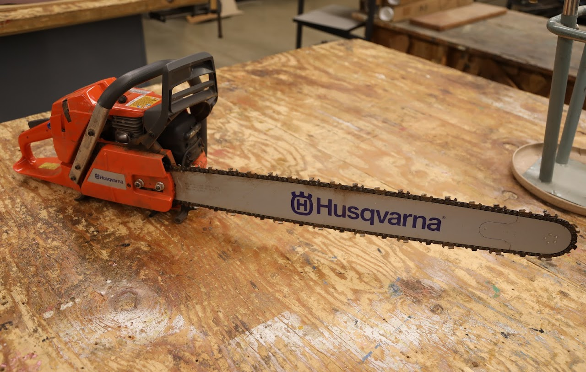

Equipment Inventory

Manufacturer: Husqvarna
Model#: 365 X-TORQ 71 cc
Stock#: n/a
Serial#: 2018 3701980
Acquired: May 2019
For Students / Users
Videos
Maintenance History
8/5/24:
Corvallis Power Equipment serviced saw -- saw would not want to start. They checked the ignition. Spark plug okay. Emptied fuel. Cleaned fuel system. Fuel filter replaced. Air filter cleaned. Tested.